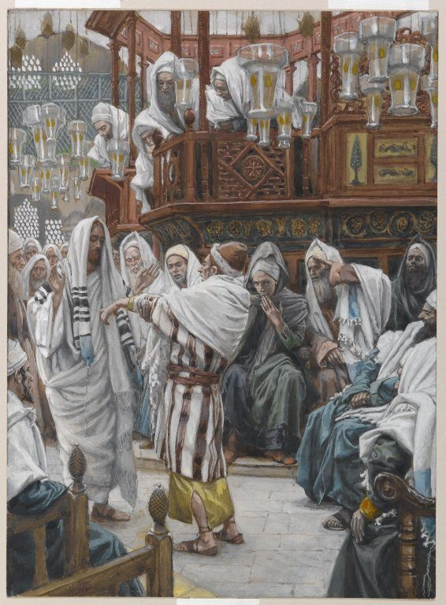

Matthew 12 — The Mister Translation

Tissot travelled to the Middle East researching costume, architecture, and synagogue furnishing before painting his 350-work ‘Life of Christ’ series, and it shows: the hanging glass lamps and the raised bimah platform are not generic biblical-movie set dressing but a real attempt at what a first-century Galilean synagogue actually held. ⚠ The painting stages the QUESTION, not the miracle — the man’s arm is still bent close to his body, not yet stretched out, and the seated men’s crossed arms and lowered brows are the ‘so that they might accuse him’ of v10, watching to see what he will do before he has done it.
_-_James_Tissot_-_overall.jpg){kind=link}
Translator’s Notes
⚠ The same verse quoted a second time, exactly as promised. ‘I desire mercy, and not sacrifice’ is Hosea 6:6 (a book not yet on these pages), and this translation already flagged, at 9:13, that Jesus would quote it ‘a second time, at 12:7, against the identical opponents over the identical charge.’ Here it is: the Greek is word-for-word the same (Eleos thelō kai ou thysian), and this translation keeps the identical English both times, on purpose, rather than varying the wording for style. There the charge was eating with sinners; here it is grain plucked on the sabbath — two different accusations, one answer both times.
An argument from Scripture’s own precedent, then from its own hierarchy. David eating the loaves of the presence (1 Samuel 21:1–6, not yet on these pages) is not a loophole Jesus invents; it is already IN the Law’s own record, and priests working the sabbath sacrifices (Numbers 28:9–10) are a second, built-in exception — the sabbath law was never absolute even on its own terms. “The loaves of the presence” (artous tēs protheseōs) renders the twelve loaves set out weekly in the sanctuary (Leviticus 24:5–9); KJV and ASV both call them ‘the shewbread’ — ‘shew’ being 1611’s spelling of ‘show,’ not a different word.
⚠ ‘Something greater than the temple’ — stated before it is explained. V6 makes the claim outright and only THEN argues for it: a claim of an authority that outranks the single most sacred site in Judaism, spoken by a wandering teacher in a grainfield. The logic only closes at v8: he can override sabbath rules that not even the temple can override, because he is kyrios tou sabbatou, LORD of the very institution.
An argument from the LESSER case, twice over. A sheep, mere livestock, is worth rescuing from a pit on the sabbath without controversy — Jesus does not even wait for the Pharisees to grant it, he assumes it. If that much is obvious, a MAN is worth immeasurably more, and ‘doing good’ (kalōs, kin to kalon, ‘good,’ the same root this chapter uses again for the good tree three sections from here) cannot be the sabbath’s enemy.
⚠ ‘Stretch out your hand’ — a command in Moses’ own vocabulary. Ekteinon tēn cheira is the Greek Old Testament’s standing formula for a command TO Moses over the plagues and the sea (Exodus 9:22, 10:12, 14:16, 14:26, none yet on these pages) — the hand that acts on God’s own instruction. Here the same imperative is spoken not to a prophet holding a staff but by the man giving the order, and the hand simply obeys.
⚠ The first time the word is ‘destroy,’ not merely ‘accuse.’ Every earlier friction with the Pharisees in this Gospel has been an argument. Here, for the first time, Matthew names the actual goal: hopōs auton apolesōsin, ‘how they might DESTROY him’ — the identical verb this translation has already watched Jesus use of what moths and rust do to treasure (Matthew 6:19–20) and of what the wide gate leads to (7:13). The healing that provoked it is, pointedly, the LAST miracle for several verses; what follows is retreat, not confrontation.
Silence commanded again — the messianic secret, and a formula quote instead of a scene. Jesus has already ordered silence after healings (8:4, 9:30, not repeated in every note); here Matthew, uniquely among the four Gospels, stops to explain WHY with the longest single Old Testament quotation in this Gospel — four full verses of Isaiah, where every other fulfillment citation so far has run one or two.
⚠ A citation that quietly drops the Greek Old Testament’s own subject. The Septuagint’s Isaiah 42:1 names the servant explicitly — ‘Jacob my servant… Israel my chosen’ — a NATION, not an individual. Matthew’s quotation keeps neither name: ‘my servant whom I CHOSE’ (hēretisa) and ‘my BELOVED’ (agapētos) replace the Greek Old Testament’s own vocabulary at exactly the points where Israel’s name would sit, individualizing a national servant-song onto one man. The wording is close enough to the Hebrew (hen avdi… bechiri, ‘behold my servant… my chosen’) that this looks like an independent rendering rather than a copy of either the Hebrew or the Greek Old Testament outright — unusual for Matthew, whose other formula quotations mostly track the Septuagint closely.
⚠ A silence that becomes a prophecy about how the story ends. ‘He will not quarrel nor cry out’ and the bruised reed left unbroken read, on the far side of this Gospel, as a description of Jesus BEFORE the Sanhedrin and Pilate — ‘he answered him not a word’ (Matthew 27:14, not yet on these pages) — not merely a prediction of temperament but of the specific silence that will meet the specific charges brought against him.
⚠ A charge this translation has been tracking since chapter 9, now given its full scene. At 9:34 the Pharisees muttered only ‘the RULER of the demons,’ with no proper name, and the note there promised: ‘Matthew will give it a full scene of its own at 12:22–32… where Jesus answers it at length and calls it the one sin that is not forgiven.’ At 10:25 the name itself was spoken, but only as a warning handed to the disciples. Here, finally, the accusation is made TO Jesus’ face, and he answers it point by point rather than letting it pass. Beelzeboul is likely a Greek carrying-over of the Hebrew slander Ba’al Zevuv, ‘lord of flies’ (2 Kings 1, not yet on these pages) — reshaped, in the Gospels’ un-mocked spelling with the L, toward ‘lord of the (heavenly) dwelling’ or ‘lord of dung,’ depending which root is read. KJV, Geneva, and Douay all spell it ‘Beelzebub’ — following the Latin Vulgate’s form, which harmonized back toward the Old Testament name; the Greek manuscripts read Beelzeboul, and this translation follows them.
The argument from internal collapse, then the argument that actually cuts. A kingdom, city, or house divided cannot stand — Satan casting out Satan would be exactly that, self-defeating. But the sharper blow is v27: Jewish exorcists (‘your sons’) already cast out demons without being accused of demonic power, so the accusation is applied selectively, and by the Pharisees’ own logic THEY will be the judges of their own inconsistency.
⚠ ‘The kingdom of GOD,’ not ‘of the heavens’ — a rare exception, worth watching for. This Gospel has said ‘the kingdom of the heavens’ at every occurrence since 3:2. Here, once, the Greek reads hē basileia tou theou — ‘the kingdom of GOD’ — one of only a handful of places in the whole book where Matthew departs from his own preferred phrase (compare the Synoptic parallel at Luke 11:20, which has ‘the FINGER of God,’ not the Spirit, over the identical saying — a genuine wording difference between the two Gospels at this exact point, not yet on these pages). This translation keeps Matthew’s own wording exactly as it stands rather than harmonizing it to his usual formula.
The strong man, bound. A closing parable in miniature: Satan is the strong man, his house the possessed, and an exorcism is only possible because the stronger one has ALREADY bound him — the true claim behind the accusation, stated as fact rather than argued for. ‘Whoever is not with me is against me’ then closes the unit with the starkest binary in the chapter: no bystanders.
⚠ The single most argued verse pair in this chapter, and this translation gives readings rather than a verdict. ‘The blasphemy of the Spirit will not be forgiven’ has produced centuries of pastoral anxiety over whether a given sin or doubt has crossed an unforgivable line. Set in ITS OWN context — immediately after the accusation just answered — the most natural reading is that this particular sin is not a private inward state but the specific, deliberate act of witnessing God’s own power at work and calling it satanic: seeing the finger of God and INSISTING it is the devil. On that reading it describes a settled, willful hardness, not a momentary doubt or an anxious fear of having committed it (which, on every reading offered, is itself evidence the fear is unfounded). Other readings exist — that it names apostasy generally, or a sin against the Spirit’s own witness that by definition closes off repentance’s only channel — and this library states them without adopting one to the exclusion of the others.
⚠ ‘This age… the age to come’ — the two-age framework, named for the first time. Aiōn here divides all of time into exactly two: the present aiōn and the aiōn still coming, mirroring the Hebrew Bible’s own olam hazeh / olam haba (‘this world’ / ‘the world to come’), a rabbinic-era way of naming the present order and the messianic order still ahead. Whatever else the unforgivable sin is, Jesus frames its consequence as reaching across BOTH.
⚠ John’s own insult, word for word, now on Jesus’ own lips. ‘Brood of vipers’ was the Baptist’s charge against Pharisees and Sadducees at the Jordan (3:7) — the identical Greek phrase, gennēmata echidnōn, unaltered. There it opened a call to repentance from a man in camel’s hair; here it closes an argument from the one John had asked, from prison, whether he really was the one to come (11:3). The same two words travel from the wilderness preacher to the man he pointed toward, aimed at the same opponents.
‘Either MAKE the tree good’ — a genuine imperative, not a description. Poiēsate is 2nd-person plural aorist IMPERATIVE, ‘make!’ — a command to be internally consistent, not an observation that trees happen to match their fruit. The force is closer to a dare: choose a side, because the fruit will out you regardless of which one you claim.
Every idle word, weighed. Rhēma argon — a ‘word’ that is also ‘idle, inactive, careless’ — kept as KJV’s ‘idle word’ here, matched by ASV and NWT alike; the claim is total, that speech carries an accounting even where nothing was intended by it. V37 shifts, tellingly, from the plural ‘people’ of v36 to a bare singular ‘YOUR words’ — the general principle landing on one person at a time.
Asking for a sign, after the signs have not stopped. Two chapters of exactly that — a leper, a centurion’s servant, a paralytic, a ruler’s daughter, a withered hand, a blind and mute man just verses earlier — and the scribes and Pharisees still ‘want to see a sign,’ which is itself the tell: the demand is not for evidence but for a DIFFERENT kind of proof, on their own terms.
⚠ Three days and three nights, and how the calendar actually works. Read against a Friday crucifixion and a Sunday resurrection, a literal 72 hours does not fit — a puzzle raised often enough to deserve stating plainly. Ancient Jewish reckoning counted ANY part of a day as a whole day (compare Esther 4:16 and 5:1, ‘three days’ that plainly span parts of three, not a full 72 hours, not yet on these pages): Friday afternoon, all of Saturday, and Sunday morning make three named days by that counting, even though the elapsed time is closer to a day and a half. The phrase is idiomatic, not a modern stopwatch measurement.
⚠ ‘The belly of the sea-monster’ — and, once again, not a whale. Kētos, ‘sea-monster, huge fish,’ is the identical word this library flagged already, in the note on the famous verse Jonah’s own first chapter sets up (Jonah 1, on the Masoretic count this site follows, the fish itself falls at Hebrew 2:1): the Hebrew dag gadol, ‘great fish,’ names no species, and Jesus here reaches for the same unspecified Greek term rather than a word for whale. KJV’s ‘whale’s belly’ — the single most famous phrase behind the popular ‘Jonah and the whale’ tradition — is the translators’ own gloss, not what either the Hebrew or the Greek actually specifies; NIV and NWT both correct to ‘huge fish’ here.
Two Gentile witnesses, standing in judgment over Israel’s own capital. Nineveh’s repentance under Jonah’s five-word sermon and the queen of the south’s (traditionally, Sheba’s) journey to hear Solomon’s wisdom are both offered as outsiders who responded rightly to LESS than what stands in front of ‘this generation’ now — the identical rhetorical move already made once against Chorazin, Bethsaida, and Capernaum (11:20–24). ‘Something greater than Jonah… greater than Solomon’ is stated, again, before it is argued for.
⚠ A parable that is really the sign of Jonah’s own application, still in the same breath. Nothing marks a new audience or a change of subject; the unclean spirit’s return is spoken as one continuous answer to v38’s demand for a sign, closing with the explicit label ‘this evil generation’ — escalating ‘this generation,’ the phrase this translation first met describing children refusing to dance to either tune in the marketplace (11:16), now given the same adjective John used of the fruit-tree audience three sections back (ponēros, ‘evil,’ the noun form behind ‘the evil one’ in the Lord’s Prayer, 6:13).
Emptied, not filled. A house ‘swept and put in order’ sounds like reform, and that is precisely the trap: cleared of one thing without being filled with anything else, it is an open vacancy for something worse. The warning is aimed at a nation that has seen exorcisms, healings, and a Sermon, and could still end up worse off than before — reformation without replacement.
⚠ A real manuscript question sits at v47 itself. The Westcott-Hort edition, built to weigh the earliest Greek manuscripts most heavily, OMITS this verse outright (the report that Jesus’ family is standing outside); most other critical editions, including the one this translation follows, keep it — it is needed for v48’s ‘the one SPEAKING to him’ to have an antecedent at all, and it is very widely attested elsewhere. A likely explanation is a scribal eye-skip: v46 and v47 both end on ‘seeking to speak to him,’ the exact kind of repeated phrase a copyist’s eye can jump past.
⚠ ‘His brothers’ — a word the traditions read differently, and this translation states rather than settles. Adelphoi is the ordinary Greek word for full or half brothers. Historic Catholic teaching, following Jerome, has generally read it as a broader term for kinsmen or cousins, to preserve the doctrine of Mary’s perpetual virginity; the plain sense of the Greek word itself, and the reading most Protestant traditions have taken, is full siblings, later children of Mary and Joseph. Matthew will name four of them by name at 13:55–56 — James, Joseph, Simon, and Judas — alongside unnamed sisters. The text does not resolve the question; it states the family relationship and moves on.
Not a rejection of family — a redefinition of it, mid-sentence. ‘Who is my mother, and who are my brothers?’ sounds harsh in isolation; the hand extended toward the disciples answers it before the sentence closes. Kinship is redrawn around one criterion — doing the will of the Father — without a word said against Mary or the brothers themselves, who reappear later in the story on both sides of exactly this question (John 7:5, ‘not even his brothers believed in him,’ and Mary standing at the cross, John 19:25–27, neither yet on these pages).
Patterns worth carrying forward
Where this translation keeps the exact / distinct words: “I desire mercy, and not sacrifice” kept byte-for-byte identical to its first quotation at 9:13, on purpose; “the kingdom of the heavens” departed from just once, at v28, where the Greek itself reads ‘the kingdom of GOD’ and this translation follows it rather than smoothing it back to Matthew’s usual phrase; “brood of vipers” kept identical to 3:7’s wording now that Jesus himself uses it; and “Beelzeboul,” the Greek spelling with the L, kept over the Vulgate-descended ‘Beelzebub’ of KJV/Douay/Geneva.
Where it goes its own way: the Isaiah 42 citation at vv18–21 prints the Greek Old Testament’s own ‘Jacob… Israel’ nowhere — Matthew’s quotation individualizes a national servant-song onto one man, and this translation follows that quotation exactly as it stands rather than restoring the names; the blasphemy of the Spirit (vv31–32) is presented with its range of readings and no single verdict imposed; and ‘his brothers’ (v46) is left as the plain sense of adelphoi while noting, factually, that the Catholic tradition reads the word more broadly to protect a doctrine this translation does not adjudicate.
Echoes paid. The Hosea 6:6 quotation promised a second time at 9:13 lands here at 12:7, against the identical opponents; the Beelzeboul charge planted at 9:34 and named at 10:25 finally gets its full scene and Jesus’ own point-by-point answer (vv22–32); John the Baptist’s ‘brood of vipers’ (3:7) returns from Jesus’ own mouth (12:34); and ‘this generation’ — the marketplace children who would dance to neither tune (11:16) — escalates to ‘this EVIL generation’ twice over (12:39, 45).
Echoes planted. The Isaiah 42 servant who ‘will not quarrel nor cry out’ (12:19) is the same silence this Gospel will describe at the trial — ‘he answered him not a word’ (27:14, not yet on these pages); ‘the sign of Jonah’ (12:39) will be demanded and refused a second time, in identical language (16:4, not yet on these pages); the rare ‘kingdom of GOD’ at v28 is one of only a handful of departures from ‘the kingdom of the heavens’ this book will make (19:24, 21:31, 21:43 — all three now on these pages) — worth watching for the pattern across them; and the brothers named ‘his mother and his brothers’ here without names (12:46) will be named outright — James, Joseph, Simon, and Judas — at 13:55–56, the very next chapter.
Next in this book: chapter 13 — the Parables discourse opens, the sower and the seed, the weeds sown among the wheat while everyone slept, and a kingdom small enough to hide in a woman’s three measures of flour.